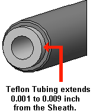
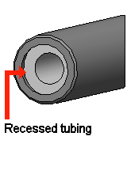

Specs - Sample Pipettor Module
Hardware Specifications
| Component | Description |
|---|---|
| Probe, Sample |
|
| Sheath, Probe (Metal) |
|
| Tubing, Probe |
|
| X-axis Motion |
|
| Z-axis Motion |
|
Tubing Length Specifications
These are the acceptable versus defective sample probes.
Note:
- The length of Teflon tubing extending from the stainless steel probe is a critical factor in sample carryover issues.
- Recessed or excessively extended tubing creates sample carryover problems because recessed tubing exposes the very rough, difficult to wash, rough interior of the stainless steel sheath.
- Repetitive exposure to cold temperatures during shipping and storage increases the risk of tubing retreating into the stainless steel probe.
- Sample probes fail when the tubing fails to extend to the original length when warmed to room temperature.
| Acceptable Tubing | Defective Tubing |
|---|---|
| Extends up to 0.009 in (0.228 mm) beyond the end of the metal sheath.
 |
Extends beyond 0.009 in (0.025 mm)
OR is recessed into metal sheath
 |